#1 · 3016 嘉晶2026-08-26 09:00 → 09-01 09:00
+4.90%
entry 102.00 stop 93.90 (−8.10) target 118.20 exit 107.00 time +5.00 破底 93.90 @ 08-25 10:00 站回 08-26 09:00 MA5 96.68 / MA10 98.51 / MA20 99.61 fwd +1d -0.49% +3d -2.16% +5d +1.96%
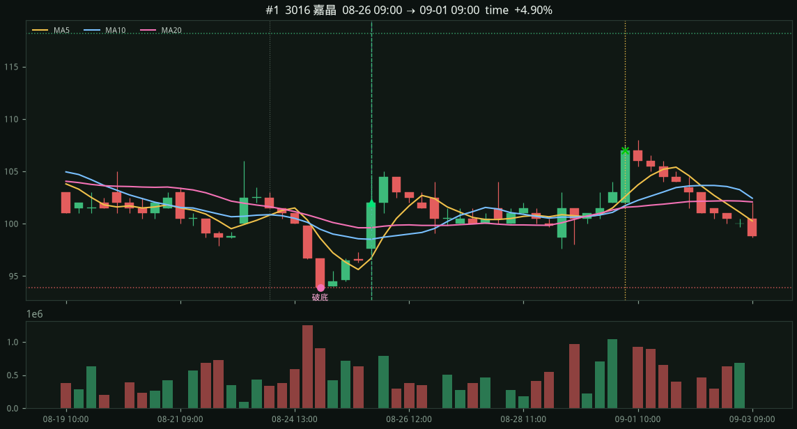
30d · Yahoo 2mo 1h · 股價<1000 · 基準日 20260924 · 200 檔 · 成交額末名約 3.4 億
跌破 MA20 後待 6～16 根（不准假站上），深度 ≥ 3.5%，最低點為近 16 根新低，破底與翻上不同根，從低點至少彈 3%，再站回 MA20。
破底後 36 根內第一根收盤 > MA5 / MA10 / MA20 進場。
回測出場：停在破底低、2R、或 20 根時間停。加總％是各筆報酬相加，不是組合複利。
漏斗：跌破 1992 → 成波 243 → 進場 242
· 太短 1124 · 不夠深 103 · 非破底 115
· 假站過多 0 · 逾時 407 · 沒站上均線 0
· 同根錘 0 · 彈太弱 1 · 進場價過高 2
出場：2R 16 · 停損 39 · 時間 87 · 未平 7
· 收盤後 +1d -0.27% · +3d +0.44% · +5d +1.23%
entry 102.00 stop 93.90 (−8.10) target 118.20 exit 107.00 time +5.00 破底 93.90 @ 08-25 10:00 站回 08-26 09:00 MA5 96.68 / MA10 98.51 / MA20 99.61 fwd +1d -0.49% +3d -2.16% +5d +1.96%

entry 278.00 stop 255.00 (−23.00) target 324.00 exit 278.50 time +0.50 破底 255.00 @ 08-25 09:00 站回 08-26 09:00 MA5 269.20 / MA10 264.55 / MA20 271.82 fwd +1d -0.72% +3d +3.96% +5d +0.18%
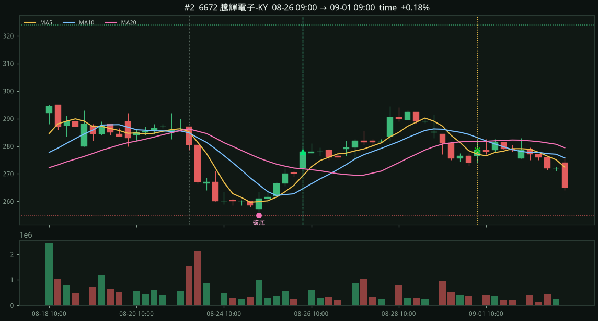
entry 243.00 stop 231.00 (−12.00) target 267.00 exit 250.50 time +7.50 破底 231.00 @ 08-25 10:00 站回 08-26 09:00 MA5 237.80 / MA10 239.70 / MA20 241.88 fwd +1d +1.44% +3d +2.67% +5d +4.32%
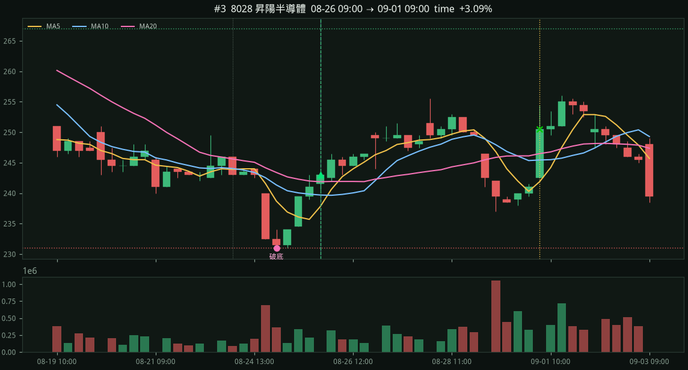
entry 553.00 stop 483.00 (−70.00) target 693.00 exit 640.00 time +87.00 破底 483.00 @ 08-25 09:00 站回 08-26 09:00 MA5 522.10 / MA10 516.35 / MA20 534.92 fwd +1d +4.16% +3d +14.83% +5d +13.20%
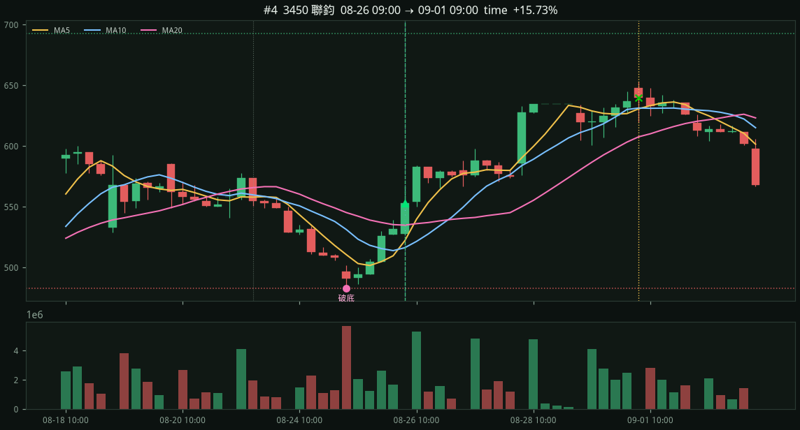
entry 110.50 stop 96.20 (−14.30) target 139.10 exit 106.50 time -4.00 破底 96.20 @ 08-25 10:00 站回 08-26 09:00 MA5 101.28 / MA10 100.98 / MA20 101.99 fwd +1d +0.00% +3d +0.45% +5d -2.71%
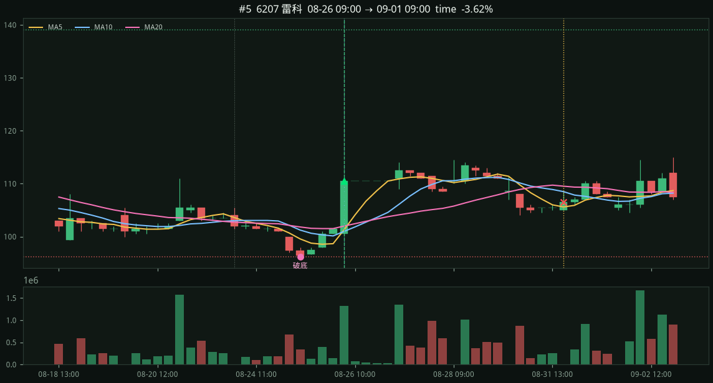
entry 60.40 stop 56.10 (−4.30) target 69.00 exit 69.00 target +8.60 破底 56.10 @ 08-25 09:00 站回 08-26 09:00 MA5 58.38 / MA10 57.77 / MA20 58.37 fwd +1d -0.17% +3d +2.65% +5d +22.02%
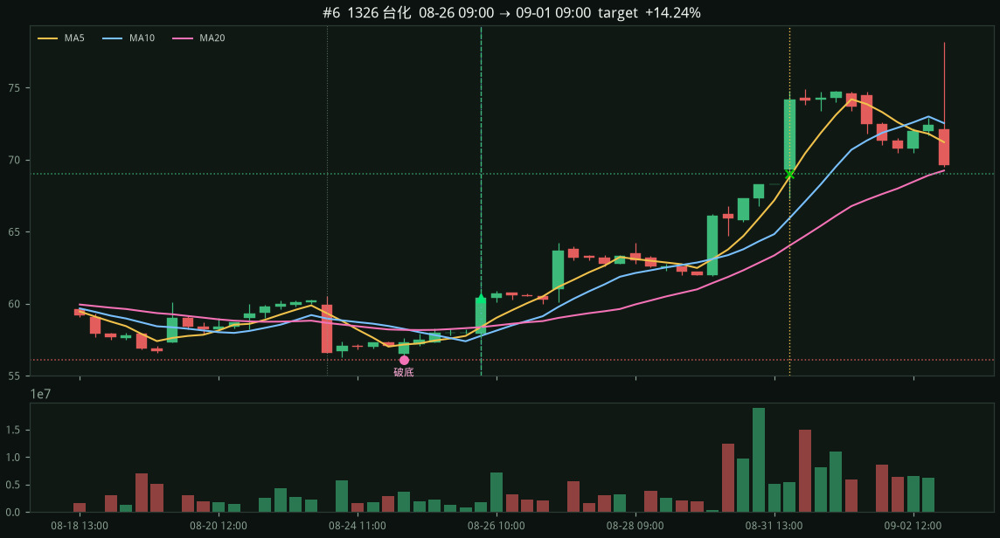
entry 235.50 stop 225.50 (−10.00) target 255.50 exit 249.50 time +14.00 破底 225.50 @ 08-25 09:00 站回 08-26 09:00 MA5 230.90 / MA10 231.55 / MA20 233.60 fwd +1d +3.40% +3d +5.31% +5d +5.52%
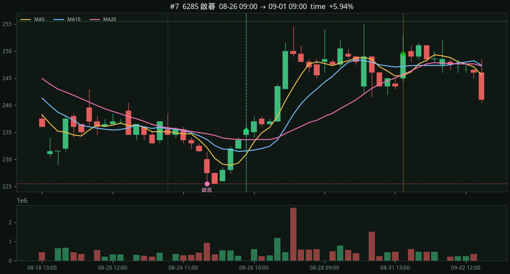
entry 500.00 stop 462.50 (−37.50) target 575.00 exit 500.00 time +0.00 破底 462.50 @ 08-25 11:00 站回 08-26 09:00 MA5 478.80 / MA10 485.35 / MA20 488.52 fwd +1d +0.20% +3d -1.60% +5d +1.00%
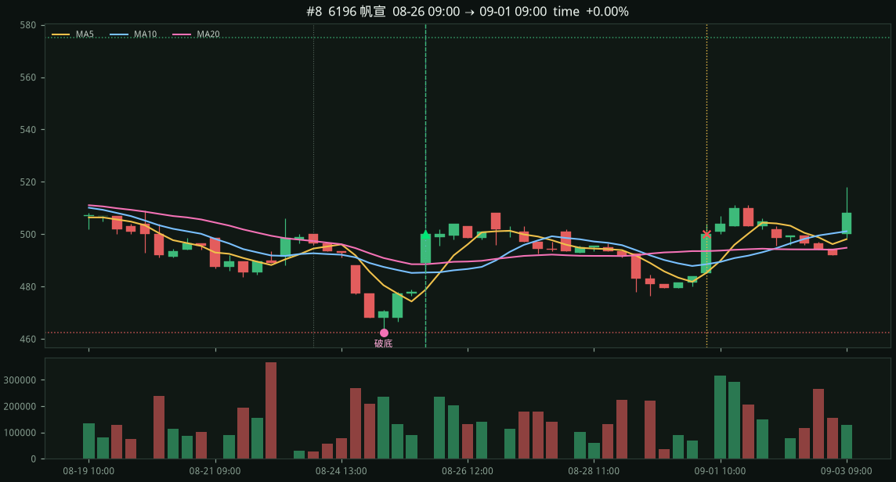
entry 161.50 stop 155.00 (−6.50) target 174.50 exit 155.00 stop -6.50 破底 155.00 @ 08-25 09:00 站回 08-26 09:00 MA5 158.50 / MA10 158.70 / MA20 160.28 fwd +1d +0.00% +3d -0.31% +5d -1.55%
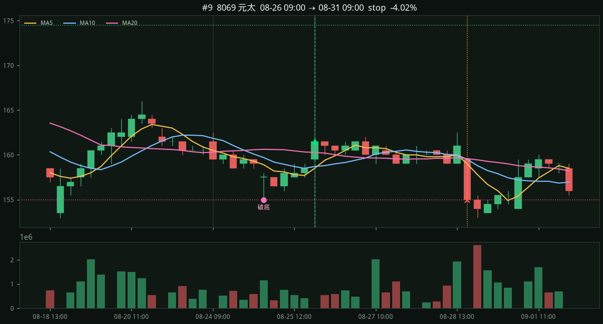
entry 475.00 stop 439.50 (−35.50) target 546.00 exit 501.00 time +26.00 破底 439.50 @ 08-25 09:00 站回 08-26 09:00 MA5 460.20 / MA10 455.00 / MA20 463.02 fwd +1d +1.58% +3d +3.16% +5d +6.11%
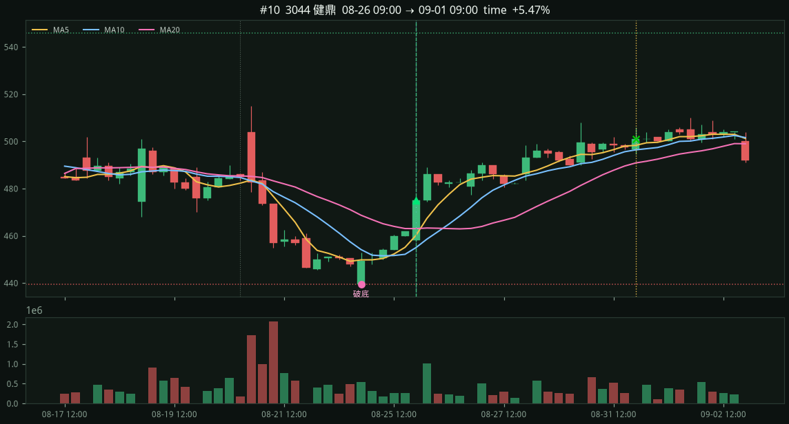
entry 476.50 stop 448.50 (−28.00) target 532.50 exit 532.50 target +56.00 破底 448.50 @ 08-25 10:00 站回 08-26 09:00 MA5 460.60 / MA10 462.85 / MA20 466.00 fwd +1d +2.41% +3d +4.93% +5d +13.75%
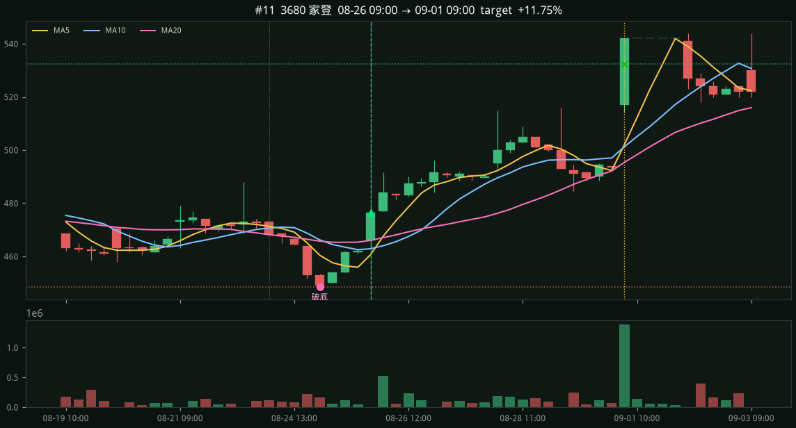
entry 66.10 stop 62.80 (−3.30) target 72.70 exit 72.70 target +6.60 破底 62.80 @ 08-25 10:00 站回 08-26 09:00 MA5 64.10 / MA10 64.57 / MA20 64.93 fwd +1d +0.76% +3d +15.89% +5d +11.80%
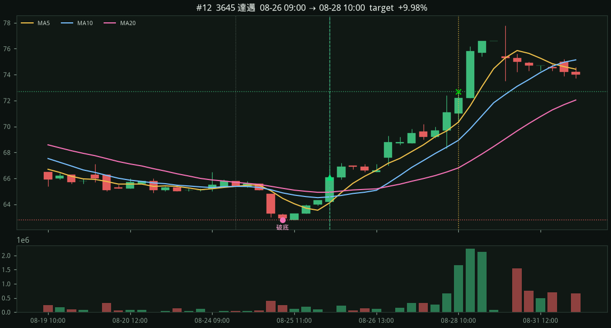
entry 518.00 stop 480.00 (−38.00) target 594.00 exit 522.00 time +4.00 破底 480.00 @ 08-25 10:00 站回 08-26 10:00 MA5 504.70 / MA10 501.00 / MA20 509.85 fwd +1d -0.77% +3d +3.86% +5d -0.39%
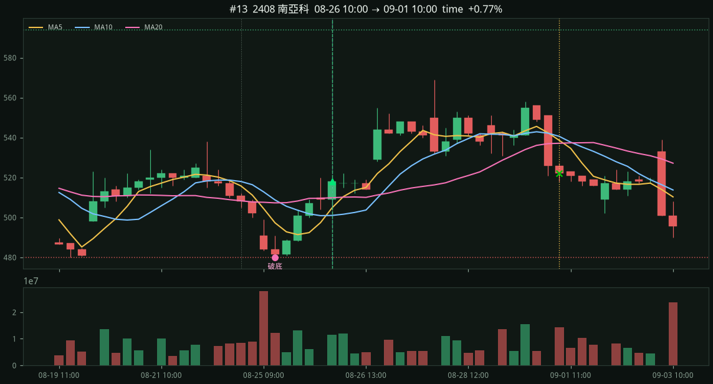
entry 710.00 stop 635.00 (−75.00) target 860.00 exit 829.00 time +119.00 破底 635.00 @ 08-25 11:00 站回 08-26 10:00 MA5 678.60 / MA10 674.20 / MA20 703.10 fwd +1d +0.42% +3d +10.42% +5d +12.96%
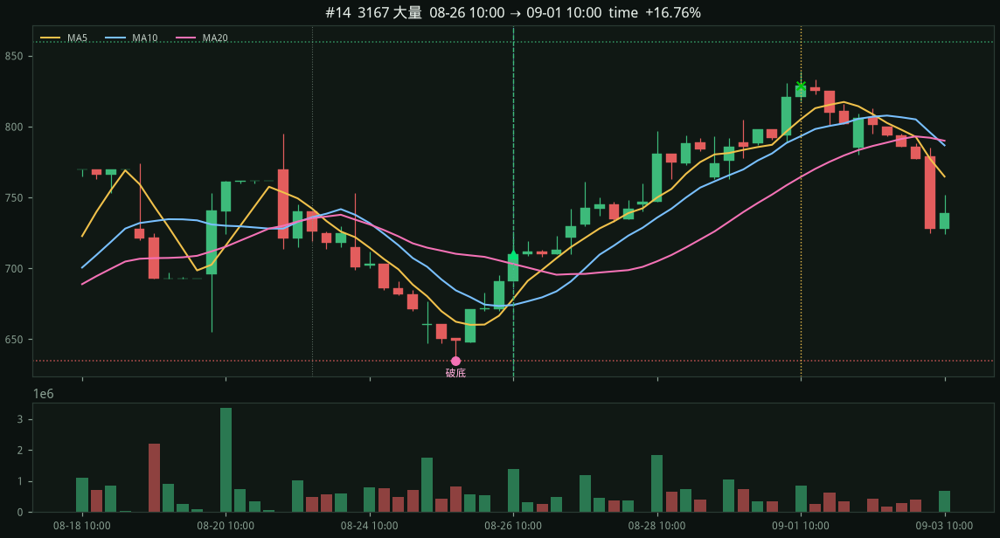
entry 489.50 stop 418.50 (−71.00) target 631.50 exit 536.00 time +46.50 破底 418.50 @ 08-25 09:00 站回 08-26 10:00 MA5 453.50 / MA10 445.95 / MA20 466.93 fwd +1d +0.00% +3d +6.03% +5d +10.52%
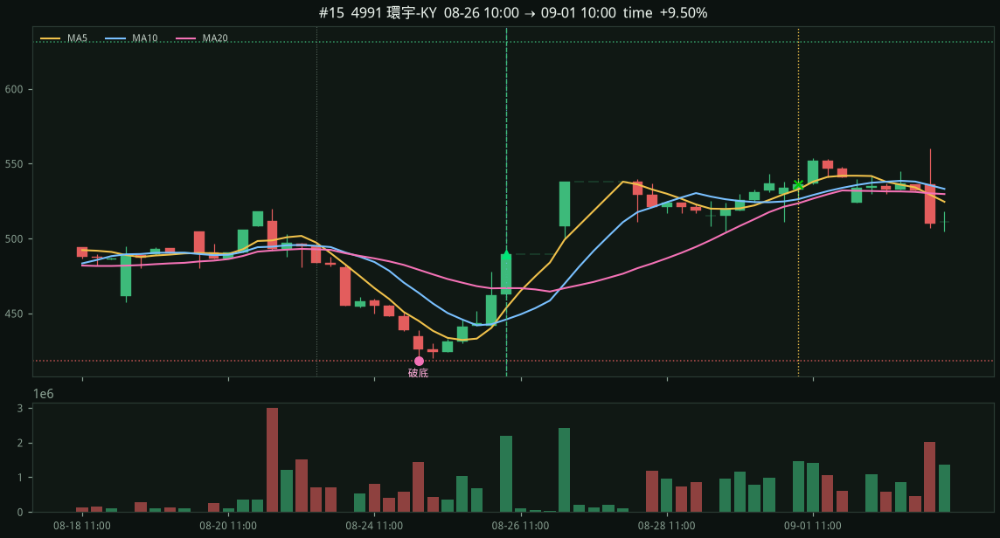
entry 555.00 stop 502.00 (−53.00) target 661.00 exit 660.00 time +105.00 破底 502.00 @ 08-25 09:00 站回 08-26 10:00 MA5 546.40 / MA10 538.60 / MA20 554.80 fwd +1d -0.90% +3d +1.80% +5d +18.92%
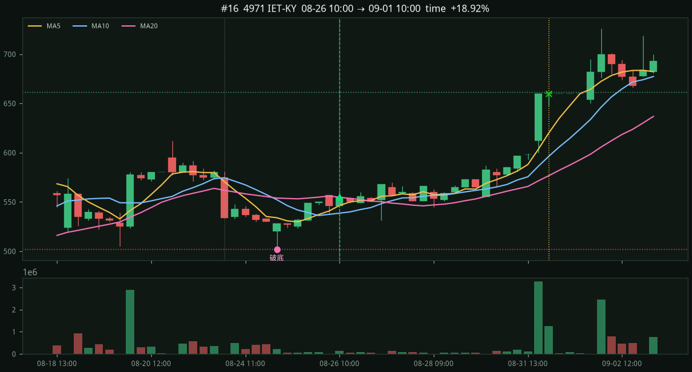
entry 862.00 stop 803.00 (−59.00) target 980.00 exit 888.00 time +26.00 破底 803.00 @ 08-25 11:00 站回 08-26 11:00 MA5 850.60 / MA10 844.70 / MA20 861.70 fwd +1d -0.46% +3d +1.04% +5d +3.02%
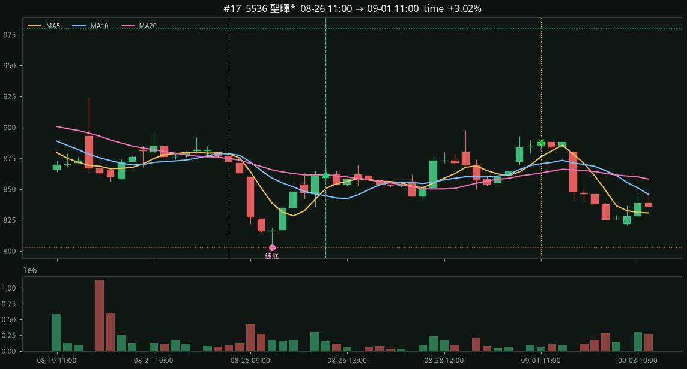
entry 217.50 stop 190.50 (−27.00) target 271.50 exit 260.00 time +42.50 破底 190.50 @ 08-25 11:00 站回 08-27 09:00 MA5 202.50 / MA10 200.20 / MA20 204.40 fwd +1d +0.00% +3d +11.72% +5d +18.39%
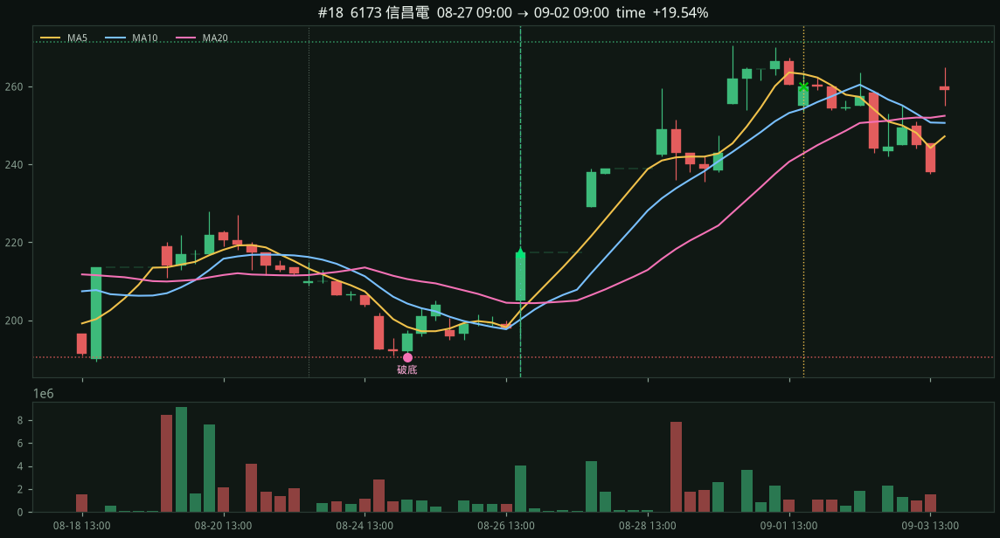
entry 73.30 stop 68.60 (−4.70) target 82.70 exit 77.30 time +4.00 破底 68.60 @ 08-24 10:00 站回 08-27 09:00 MA5 70.90 / MA10 70.87 / MA20 71.45 fwd +1d -0.82% +3d +0.27% +5d +7.23%
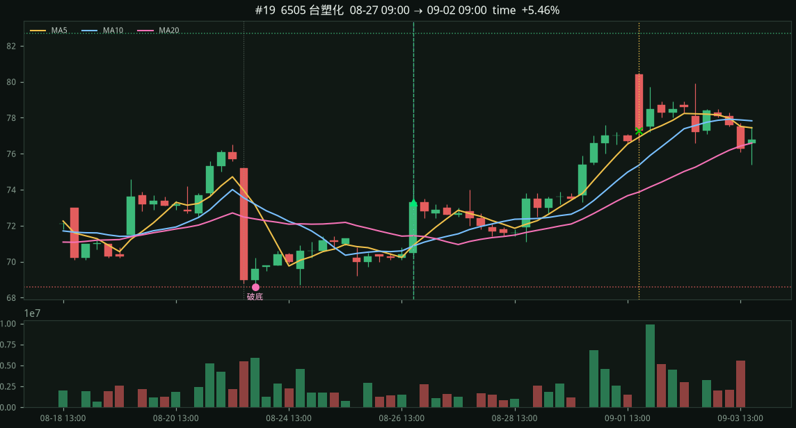
entry 971.00 stop 925.00 (−46.00) target 1063.00 exit 925.00 stop -46.00 破底 925.00 @ 08-27 09:00 站回 08-28 11:00 MA5 958.40 / MA10 955.00 / MA20 962.55 fwd +1d -1.24% +3d +1.75% +5d -5.05%
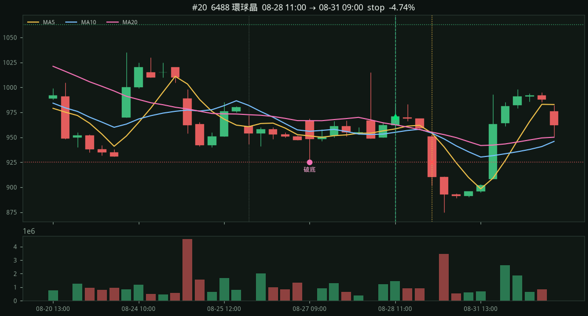
entry 68.60 stop 61.30 (−7.30) target 83.20 exit 69.20 time +0.60 破底 61.30 @ 08-28 13:00 站回 08-31 09:00 MA5 64.02 / MA10 64.61 / MA20 64.94 fwd +1d +0.00% +3d +11.22% +5d +1.90%
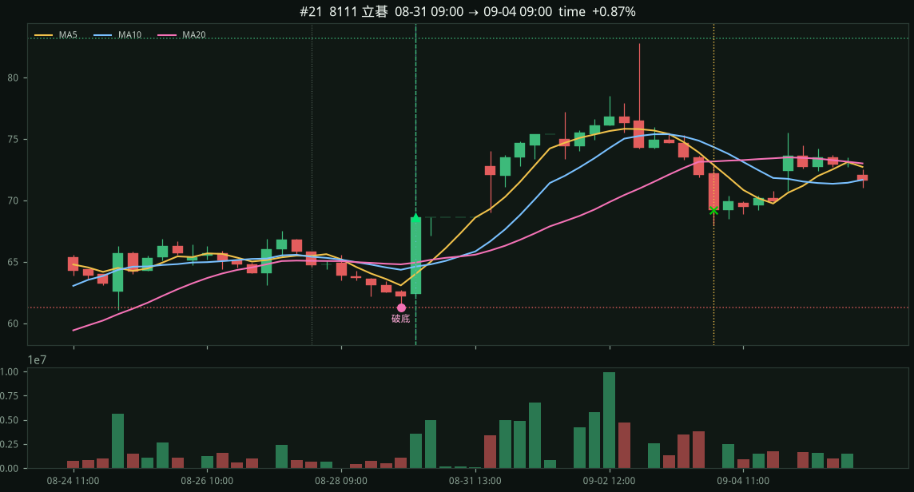
entry 226.00 stop 197.50 (−28.50) target 283.00 exit 283.00 target +57.00 破底 197.50 @ 08-31 09:00 站回 09-01 09:00 MA5 211.40 / MA10 211.75 / MA20 212.15 fwd +1d +0.00% +3d +20.80% +5d +33.85%
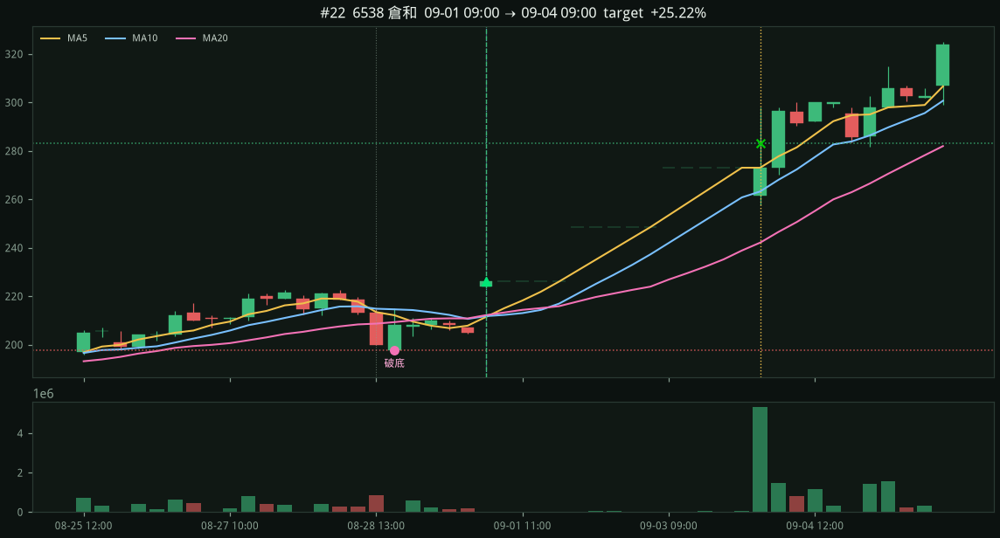
entry 77.10 stop 73.60 (−3.50) target 84.10 exit 73.60 stop -3.50 破底 73.60 @ 08-31 10:00 站回 09-01 10:00 MA5 75.00 / MA10 75.14 / MA20 76.00 fwd +1d -0.26% +3d -9.21% +5d -8.56%
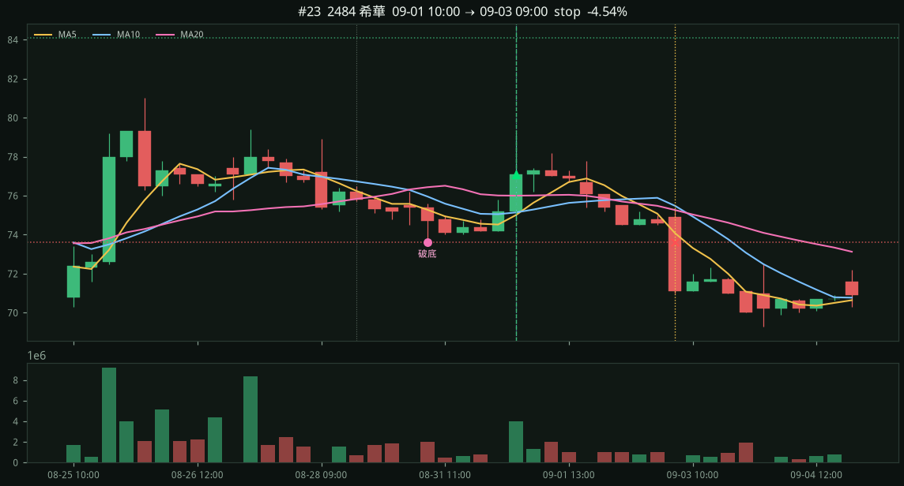
entry 159.00 stop 153.00 (−6.00) target 171.00 exit 153.00 stop -6.00 破底 153.00 @ 08-31 10:00 站回 09-01 10:00 MA5 156.40 / MA10 157.10 / MA20 158.70 fwd +1d +0.00% +3d -6.29% +5d -5.66%
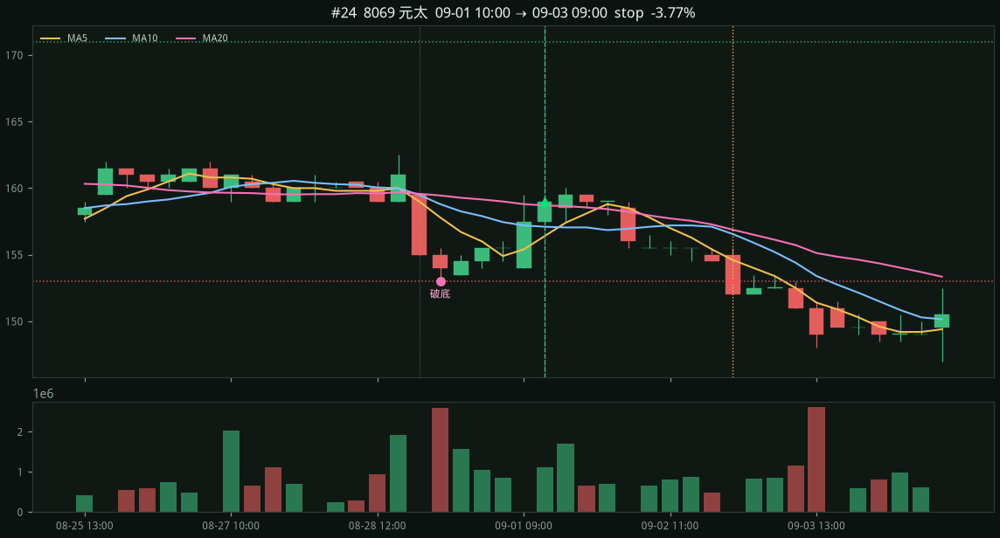
entry 776.00 stop 737.00 (−39.00) target 854.00 exit 737.00 stop -39.00 破底 737.00 @ 08-31 10:00 站回 09-01 11:00 MA5 765.80 / MA10 762.50 / MA20 775.25 fwd +1d -0.64% +3d -8.38% +5d -4.77%
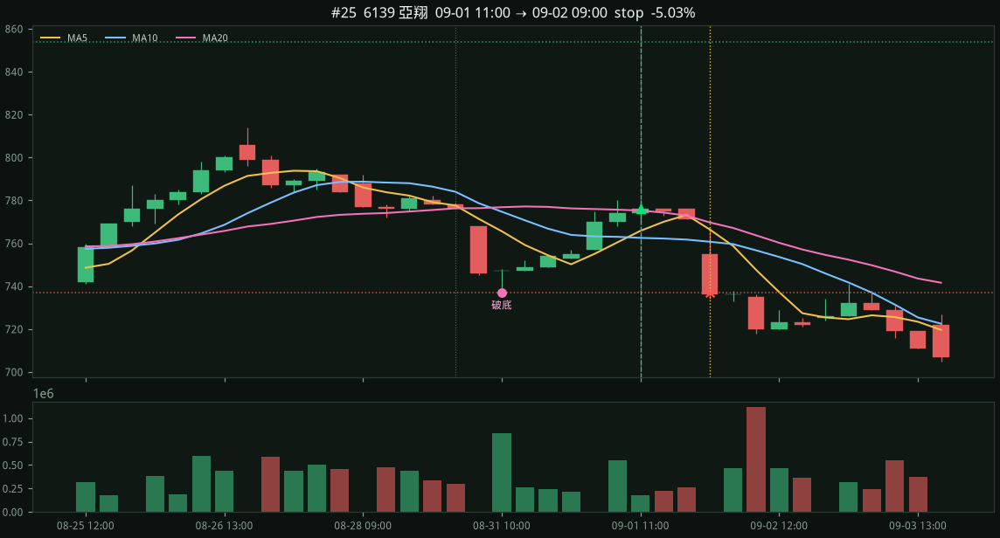
entry 198.50 stop 175.00 (−23.50) target 245.50 exit 200.50 time +2.00 破底 175.00 @ 08-31 10:00 站回 09-02 09:00 MA5 186.20 / MA10 182.65 / MA20 190.05 fwd +1d +1.51% +3d +6.05% +5d -3.02%
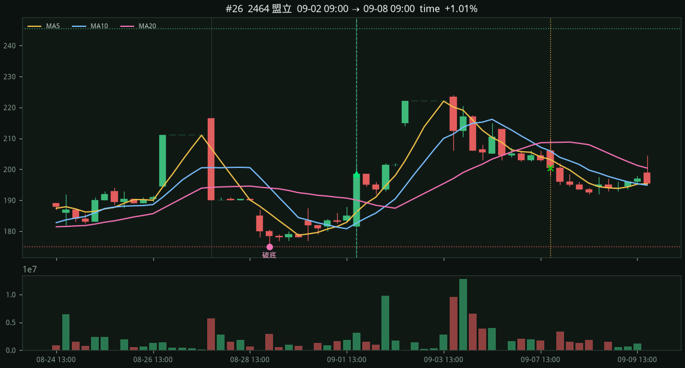
entry 443.50 stop 401.50 (−42.00) target 527.50 exit 415.00 time -28.50 破底 401.50 @ 09-01 09:00 站回 09-02 09:00 MA5 423.40 / MA10 418.55 / MA20 438.38 fwd +1d -3.95% +3d -3.49% +5d -7.44%
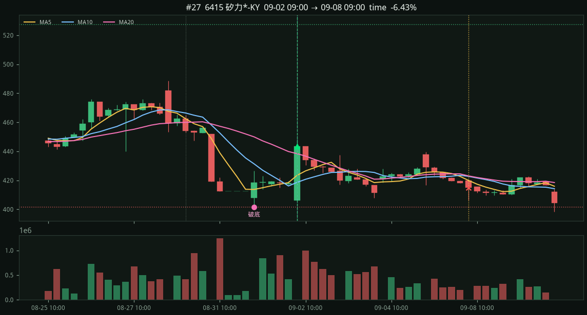
entry 37.20 stop 35.50 (−1.70) target 40.60 exit 35.50 stop -1.70 破底 35.50 @ 09-02 09:00 站回 09-02 09:00 MA5 36.71 / MA10 36.52 / MA20 36.71 fwd +1d -2.02% +3d +1.21% +5d -7.93%
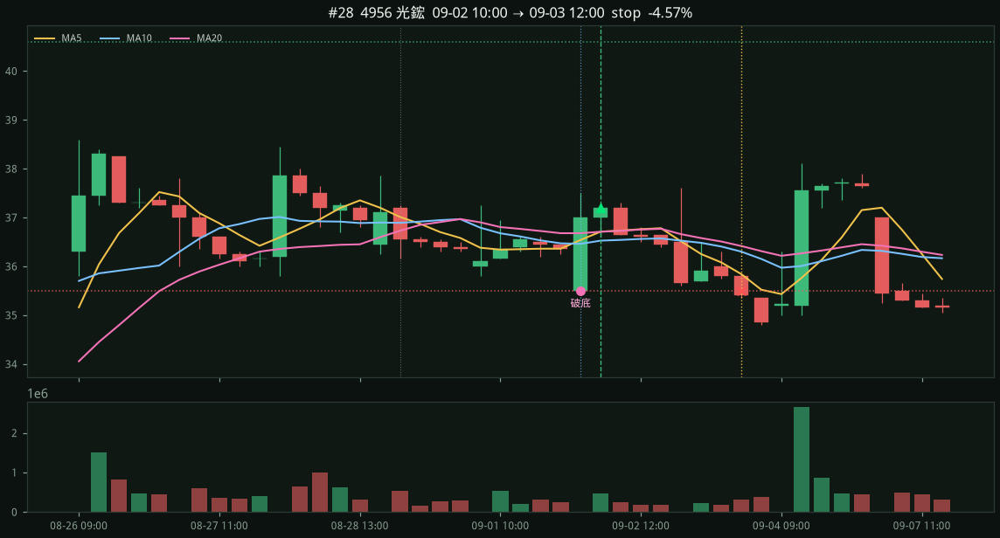
entry 765.00 stop 726.00 (−39.00) target 843.00 exit 726.00 stop -39.00 破底 726.00 @ 08-31 10:00 站回 09-02 10:00 MA5 758.00 / MA10 751.00 / MA20 755.10 fwd +1d +0.13% +3d +1.18% +5d -5.23%
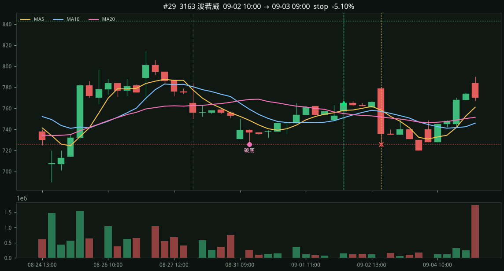
entry 323.00 stop 296.50 (−26.50) target 376.00 exit 296.50 stop -26.50 破底 296.50 @ 09-02 09:00 站回 09-02 09:00 MA5 307.00 / MA10 305.55 / MA20 307.65 fwd +1d -2.32% +3d -4.80% +5d -10.22%
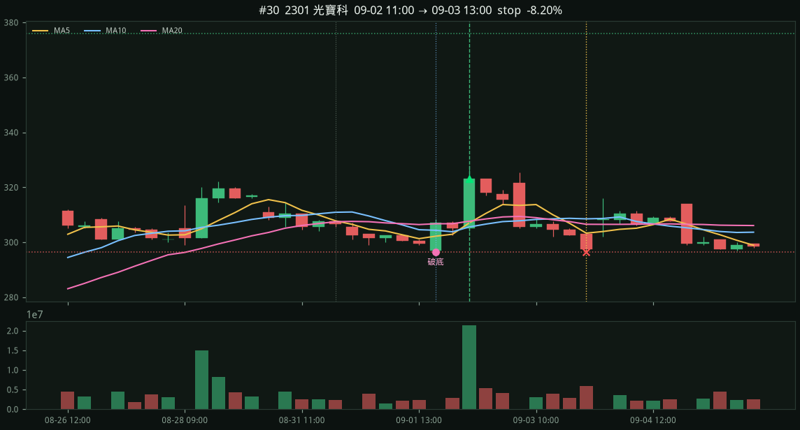
entry 265.00 stop 251.00 (−14.00) target 293.00 exit 259.00 time -6.00 破底 251.00 @ 09-01 11:00 站回 09-02 11:00 MA5 262.00 / MA10 261.45 / MA20 262.85 fwd +1d -0.38% +3d +0.00% +5d -3.02%
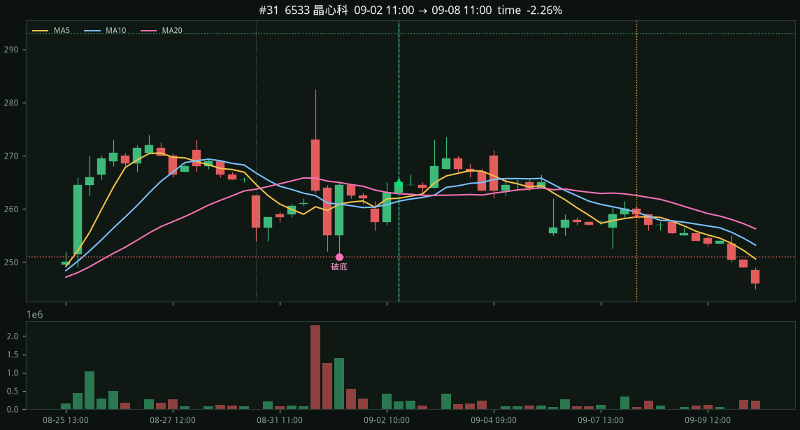
entry 194.00 stop 181.50 (−12.50) target 219.00 exit 191.00 time -3.00 破底 181.50 @ 09-02 09:00 站回 09-03 10:00 MA5 190.20 / MA10 191.75 / MA20 193.57 fwd +1d -1.55% +3d -1.03% +5d -1.55%
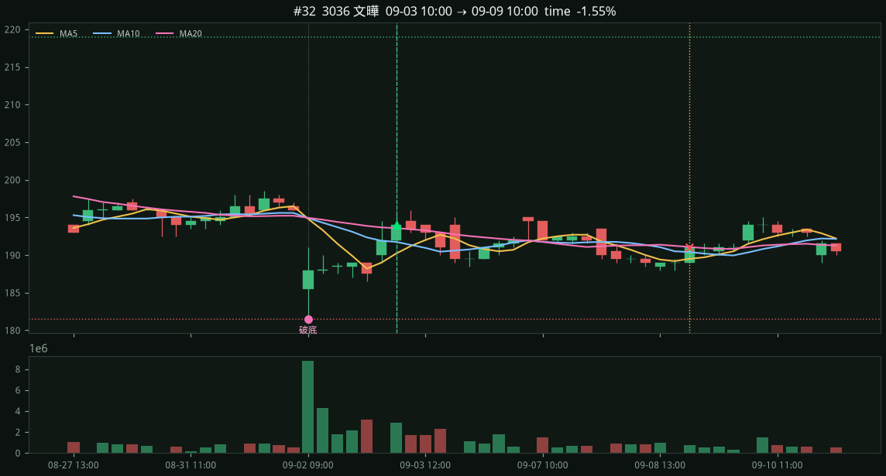
entry 270.50 stop 249.00 (−21.50) target 313.50 exit 313.50 target +43.00 破底 249.00 @ 09-03 09:00 站回 09-03 11:00 MA5 257.80 / MA10 262.45 / MA20 263.15 fwd +1d -1.48% +3d +9.43% +5d +17.93%
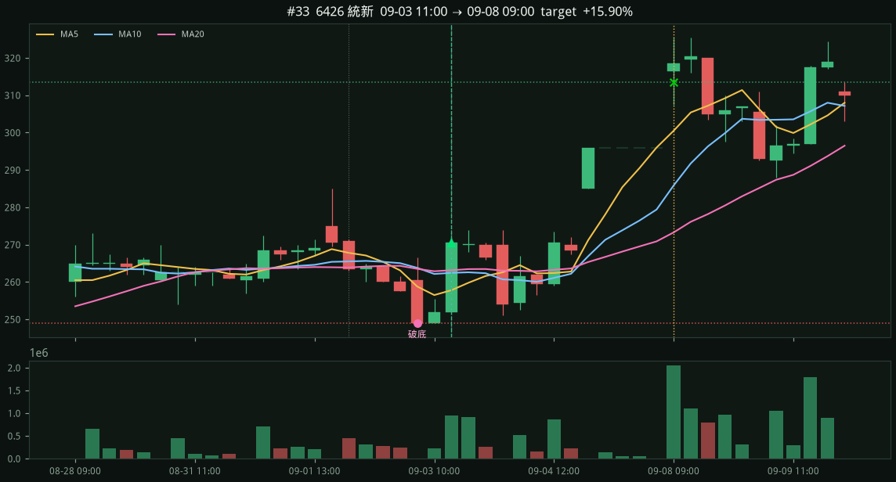
entry 128.50 stop 123.00 (−5.50) target 139.50 exit 139.50 target +11.00 破底 123.00 @ 09-03 09:00 站回 09-04 09:00 MA5 126.40 / MA10 126.25 / MA20 127.97 fwd +1d +1.56% +3d +5.84% +5d +10.89%
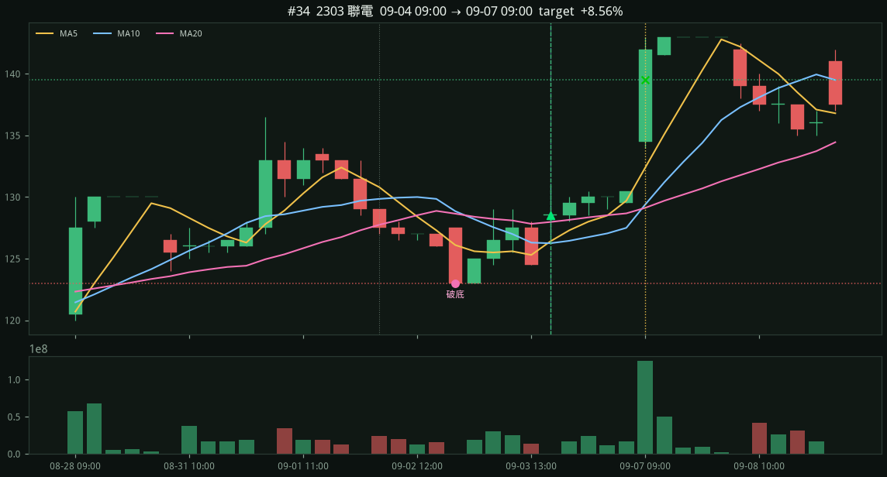
entry 548.00 stop 512.00 (−36.00) target 620.00 exit 552.00 time +4.00 破底 512.00 @ 09-03 13:00 站回 09-04 09:00 MA5 528.60 / MA10 532.70 / MA20 543.20 fwd +1d +2.55% +3d +3.47% +5d +4.38%
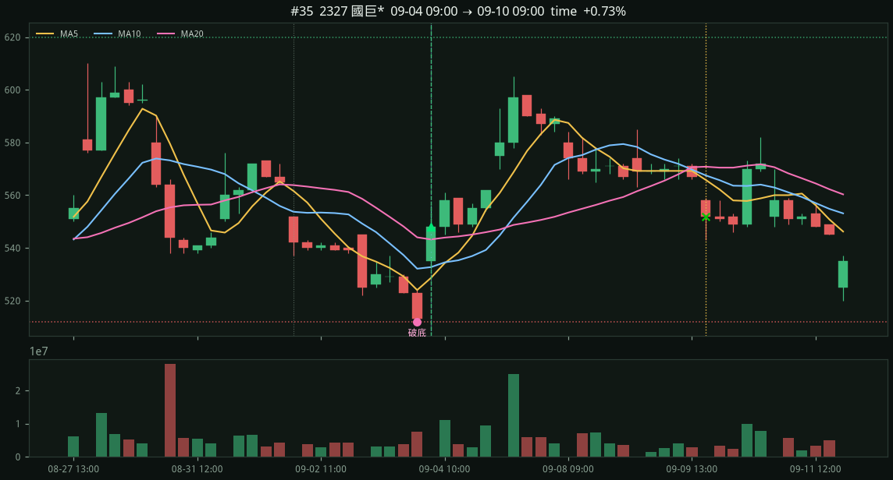
entry 91.40 stop 84.80 (−6.60) target 104.60 exit 104.60 target +13.20 破底 84.80 @ 09-03 13:00 站回 09-04 09:00 MA5 87.42 / MA10 88.22 / MA20 89.00 fwd +1d +1.97% +3d +5.58% +5d +24.18%
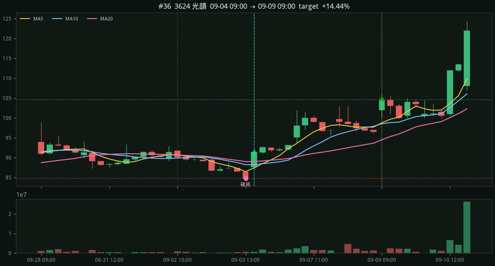
entry 294.00 stop 270.00 (−24.00) target 342.00 exit 306.00 time +12.00 破底 270.00 @ 09-03 13:00 站回 09-04 09:00 MA5 280.80 / MA10 286.80 / MA20 292.05 fwd +1d +1.53% +3d +7.82% +5d +12.93%
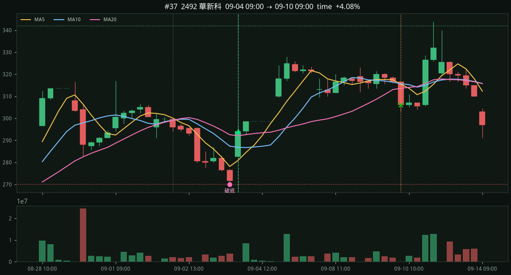
entry 40.30 stop 38.70 (−1.60) target 43.50 exit 38.70 stop -1.60 破底 38.70 @ 09-03 13:00 站回 09-04 09:00 MA5 39.51 / MA10 39.66 / MA20 39.82 fwd +1d +3.10% +3d -3.35% +5d -4.22%
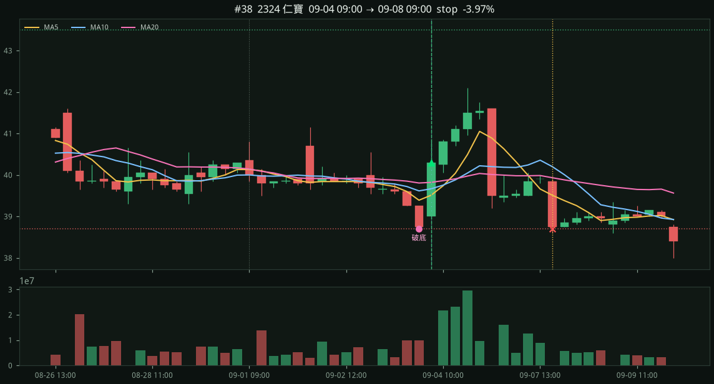
entry 220.00 stop 206.50 (−13.50) target 247.00 exit 211.00 time -9.00 破底 206.50 @ 09-03 13:00 站回 09-04 09:00 MA5 213.00 / MA10 214.95 / MA20 218.82 fwd +1d +2.50% +3d -2.50% +5d -1.14%
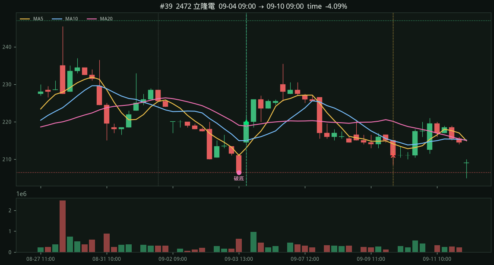
entry 798.00 stop 719.00 (−79.00) target 956.00 exit 956.00 target +158.00 破底 719.00 @ 09-04 09:00 站回 09-04 10:00 MA5 748.40 / MA10 756.60 / MA20 781.80 fwd +1d +0.63% +3d +17.04% +5d +6.14%
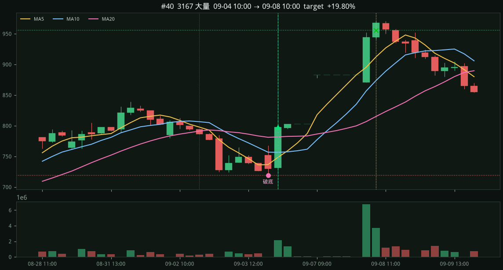
entry 200.50 stop 191.50 (−9.00) target 218.50 exit 191.50 stop -9.00 破底 191.50 @ 09-03 13:00 站回 09-04 10:00 MA5 195.90 / MA10 197.15 / MA20 198.57 fwd +1d -0.75% +3d -5.99% +5d -4.49%
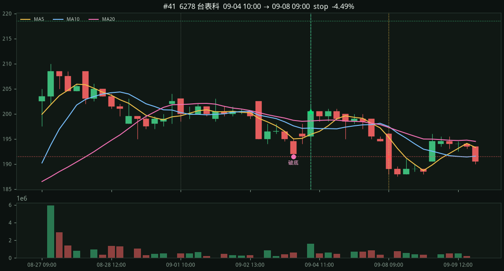
entry 37.55 stop 34.80 (−2.75) target 43.05 exit 34.80 stop -2.75 破底 34.80 @ 09-03 13:00 站回 09-04 10:00 MA5 35.76 / MA10 36.01 / MA20 36.26 fwd +1d +0.27% +3d -8.79% +5d -9.85%
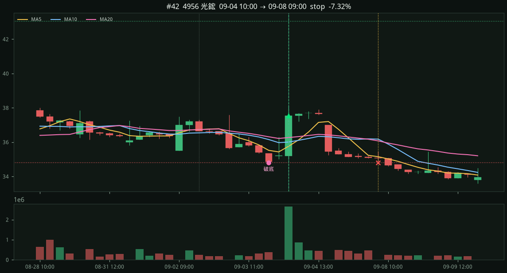
entry 270.00 stop 245.00 (−25.00) target 320.00 exit 276.50 time +6.50 破底 245.00 @ 09-03 13:00 站回 09-04 10:00 MA5 253.30 / MA10 253.40 / MA20 255.95 fwd +1d +0.00% +3d -2.04% +5d +1.85%
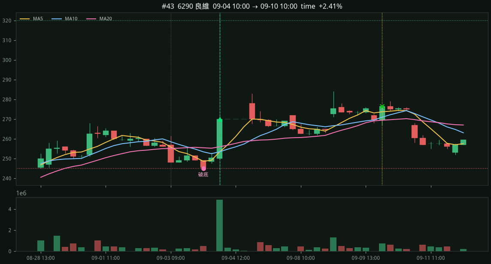
entry 977.00 stop 947.00 (−30.00) target 1037.00 exit 947.00 stop -30.00 破底 947.00 @ 09-03 13:00 站回 09-04 10:00 MA5 962.40 / MA10 965.90 / MA20 975.10 fwd +1d +0.72% +3d -7.16% +5d -6.86%
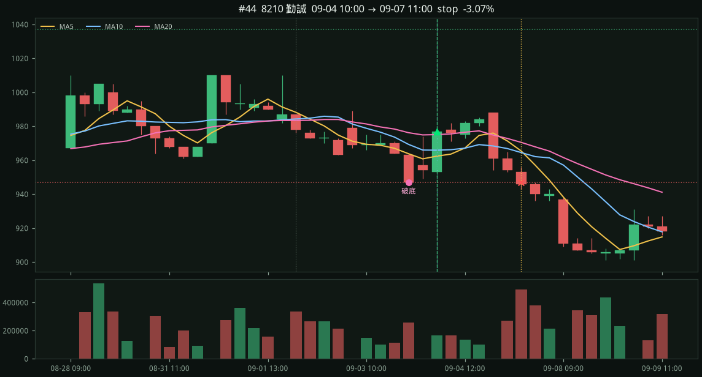
entry 43.50 stop 41.40 (−2.10) target 47.70 exit 42.25 time -1.25 破底 41.40 @ 09-04 09:00 站回 09-04 10:00 MA5 42.75 / MA10 42.71 / MA20 43.31 fwd +1d -0.57% +3d -3.56% +5d -2.64%
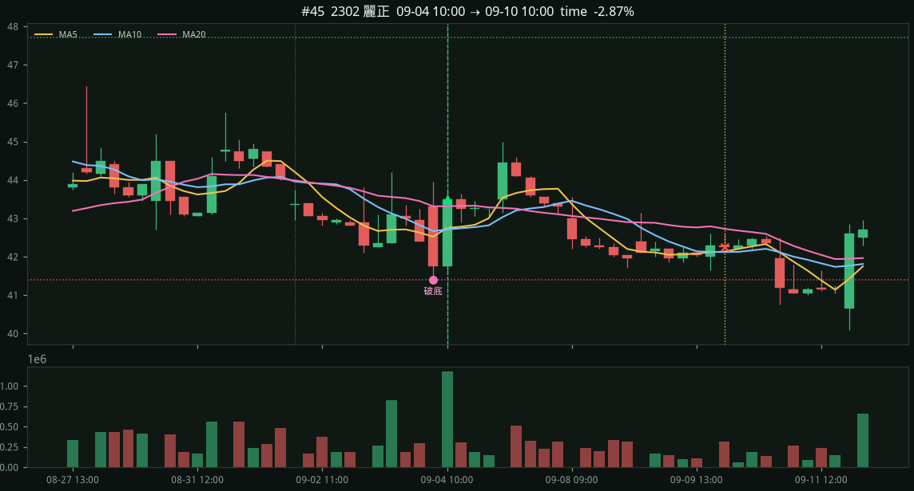
entry 748.00 stop 720.00 (−28.00) target 804.00 exit 720.00 stop -28.00 破底 720.00 @ 09-03 13:00 站回 09-04 11:00 MA5 734.40 / MA10 741.10 / MA20 747.40 fwd +1d +3.48% +3d -3.07% +5d -5.21%
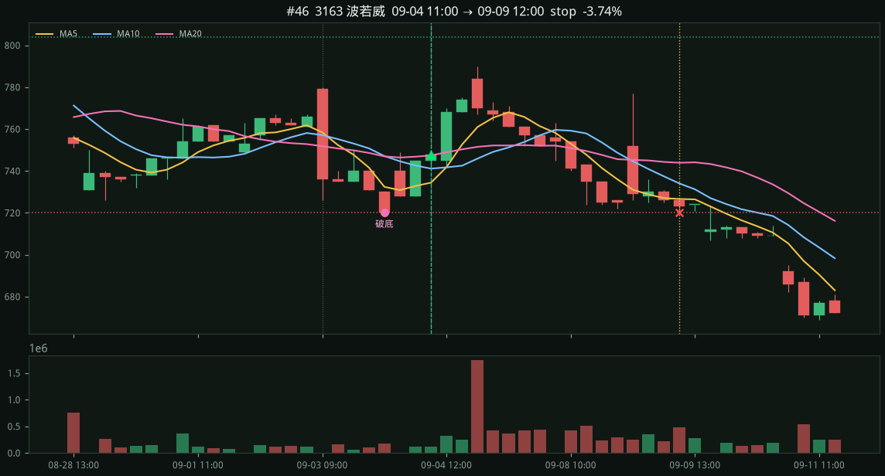
entry 73.00 stop 69.70 (−3.30) target 79.60 exit 70.10 time -2.90 破底 69.70 @ 09-04 09:00 站回 09-04 11:00 MA5 71.04 / MA10 71.35 / MA20 72.62 fwd +1d -1.78% +3d +0.55% +5d -3.84%
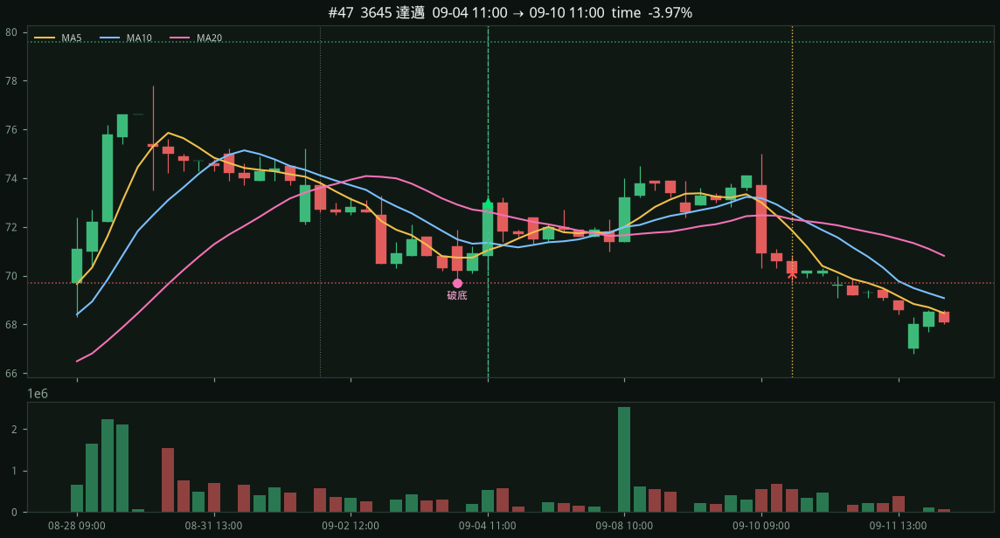
entry 249.00 stop 236.00 (−13.00) target 275.00 exit 236.00 stop -13.00 破底 236.00 @ 09-03 13:00 站回 09-04 12:00 MA5 243.00 / MA10 243.25 / MA20 246.78 fwd +1d -0.20% +3d -7.23% +5d -9.64%
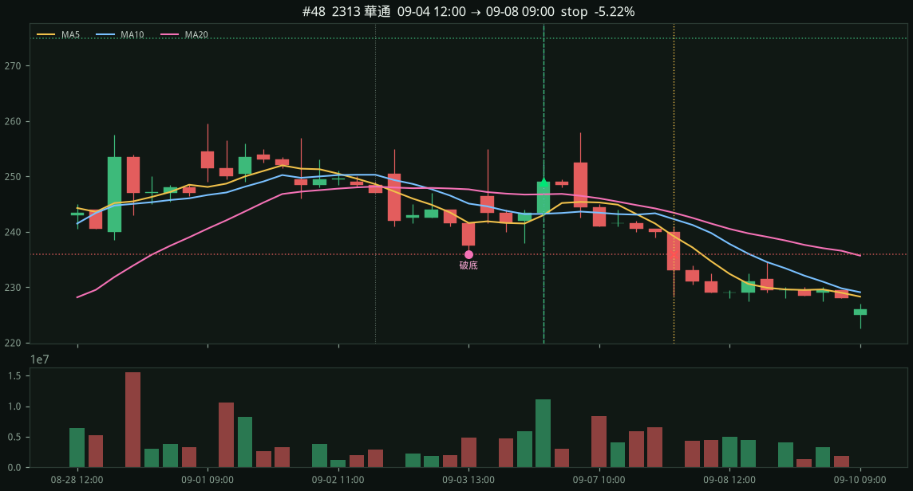
entry 610.00 stop 565.00 (−45.00) target 700.00 exit 565.00 stop -45.00 破底 565.00 @ 09-04 10:00 站回 09-04 12:00 MA5 591.40 / MA10 594.40 / MA20 605.55 fwd +1d -0.49% +3d -8.52% +5d -9.67%
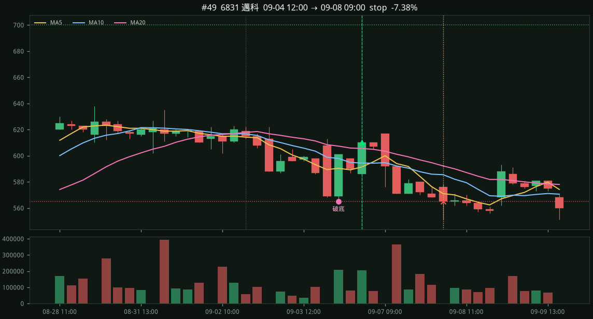
entry 749.00 stop 723.00 (−26.00) target 801.00 exit 723.00 stop -26.00 破底 723.00 @ 09-03 13:00 站回 09-04 12:00 MA5 736.20 / MA10 735.80 / MA20 745.05 fwd +1d -0.13% +3d -2.80% +5d -4.27%
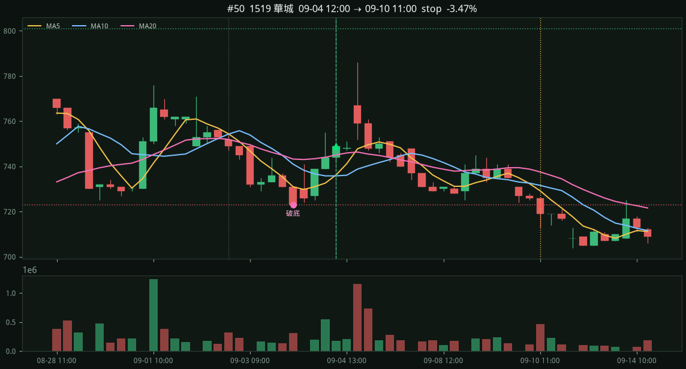
entry 179.50 stop 173.00 (−6.50) target 192.50 exit 173.00 stop -6.50 破底 173.00 @ 09-03 13:00 站回 09-04 12:00 MA5 177.50 / MA10 177.70 / MA20 179.40 fwd +1d +0.84% +3d -4.74% +5d -6.13%
entry 362.00 stop 342.00 (−20.00) target 402.00 exit 363.00 time +1.00 破底 342.00 @ 09-04 09:00 站回 09-04 12:00 MA5 349.10 / MA10 350.50 / MA20 354.48 fwd +1d +0.41% +3d -3.31% +5d -0.14%
entry 110.50 stop 104.50 (−6.00) target 122.50 exit 109.50 time -1.00 破底 104.50 @ 09-03 13:00 站回 09-04 13:00 MA5 108.50 / MA10 107.50 / MA20 110.05 fwd +1d +0.90% +3d +0.45% +5d -4.98%
entry 737.00 stop 703.00 (−34.00) target 805.00 exit 754.00 time +17.00 破底 703.00 @ 09-04 10:00 站回 09-04 13:00 MA5 718.20 / MA10 720.80 / MA20 735.55 fwd +1d +0.27% +3d +1.63% +5d -3.66%
entry 853.00 stop 820.00 (−33.00) target 919.00 exit 866.00 time +13.00 破底 820.00 @ 09-03 13:00 站回 09-04 13:00 MA5 835.20 / MA10 833.30 / MA20 847.20 fwd +1d +2.46% +3d +1.06% +5d -2.11%
entry 224.00 stop 199.00 (−25.00) target 274.00 exit 247.50 time +23.50 破底 199.00 @ 09-04 09:00 站回 09-04 13:00 MA5 213.80 / MA10 213.70 / MA20 220.38 fwd +1d -0.89% +3d +8.26% +5d +5.80%
entry 619.00 stop 598.00 (−21.00) target 661.00 exit 622.00 time +3.00 破底 598.00 @ 09-04 09:00 站回 09-04 13:00 MA5 607.80 / MA10 609.40 / MA20 615.35 fwd +1d +0.81% +3d +0.00% +5d -1.45%
entry 234.50 stop 218.00 (−16.50) target 267.50 exit 237.00 time +2.50 破底 218.00 @ 09-04 09:00 站回 09-07 09:00 MA5 225.90 / MA10 225.05 / MA20 229.70 fwd +1d -1.71% +3d +0.85% +5d +0.21%
entry 771.00 stop 632.00 (−139.00) target 1049.00 exit 792.00 time +21.00 破底 632.00 @ 09-03 13:00 站回 09-04 13:00 MA5 715.00 / MA10 688.10 / MA20 701.35 fwd +1d +0.00% +3d -2.08% +5d -3.50%
entry 504.00 stop 446.50 (−57.50) target 619.00 exit 490.00 time -14.00 破底 446.50 @ 09-04 09:00 站回 09-07 09:00 MA5 466.50 / MA10 467.65 / MA20 493.48 fwd +1d -0.60% +3d -0.20% +5d -1.59%
entry 103.00 stop 97.50 (−5.50) target 114.00 exit 103.50 time +0.50 破底 97.50 @ 09-04 09:00 站回 09-07 09:00 MA5 100.60 / MA10 100.07 / MA20 101.25 fwd +1d -1.94% +3d -2.91% +5d +6.31%
entry 71.80 stop 67.00 (−4.80) target 81.40 exit 70.90 time -0.90 破底 67.00 @ 09-04 09:00 站回 09-07 09:00 MA5 68.84 / MA10 68.83 / MA20 69.66 fwd +1d +1.53% +3d +0.97% +5d -1.67%
entry 232.50 stop 224.50 (−8.00) target 248.50 exit 224.50 stop -8.00 破底 224.50 @ 09-04 09:00 站回 09-07 09:00 MA5 228.60 / MA10 228.65 / MA20 231.82 fwd +1d -2.37% +3d +0.43% +5d -1.08%
entry 121.90 stop 108.57 (−13.33) target 148.57 exit 128.00 time +6.10 破底 108.57 @ 09-04 09:00 站回 09-07 09:00 MA5 114.00 / MA10 114.95 / MA20 118.81 fwd +1d +1.56% +3d +4.18% +5d +4.18%
entry 953.00 stop 901.00 (−52.00) target 1057.00 exit 1057.00 target +104.00 破底 901.00 @ 09-04 11:00 站回 09-07 09:00 MA5 919.20 / MA10 925.80 / MA20 941.90 fwd +1d +0.52% +3d +4.30% +5d +3.15%
entry 251.50 stop 234.50 (−17.00) target 285.50 exit 234.50 stop -17.00 破底 234.50 @ 09-04 09:00 站回 09-07 09:00 MA5 240.70 / MA10 239.90 / MA20 244.60 fwd +1d -0.20% +3d -6.16% +5d -10.34%
entry 62.60 stop 60.10 (−2.50) target 67.60 exit 60.10 stop -2.50 破底 60.10 @ 09-04 09:00 站回 09-07 09:00 MA5 61.94 / MA10 61.72 / MA20 62.39 fwd +1d -2.24% +3d -3.99% +5d -5.75%
entry 40.75 stop 38.55 (−2.20) target 45.15 exit 38.55 stop -2.20 破底 38.55 @ 09-04 09:00 站回 09-07 09:00 MA5 39.84 / MA10 39.91 / MA20 40.28 fwd +1d -2.33% +3d -4.54% +5d -7.12%
entry 120.50 stop 115.00 (−5.50) target 131.50 exit 115.00 stop -5.50 破底 115.00 @ 09-03 13:00 站回 09-07 09:00 MA5 119.60 / MA10 118.45 / MA20 120.20 fwd +1d +1.66% +3d -0.83% +5d -6.64%
entry 295.00 stop 263.50 (−31.50) target 358.00 exit 286.50 time -8.50 破底 263.50 @ 09-04 10:00 站回 09-07 09:00 MA5 277.50 / MA10 278.45 / MA20 279.90 fwd +1d +0.68% +3d +3.90% +5d -1.53%
entry 413.00 stop 390.50 (−22.50) target 458.00 exit 398.50 time -14.50 破底 390.50 @ 09-04 09:00 站回 09-07 09:00 MA5 401.00 / MA10 400.55 / MA20 406.50 fwd +1d +0.12% +3d +0.48% +5d -2.54%
entry 514.00 stop 469.50 (−44.50) target 603.00 exit 493.50 time -20.50 破底 469.50 @ 09-04 09:00 站回 09-07 09:00 MA5 499.60 / MA10 491.40 / MA20 504.25 fwd +1d -0.19% +3d +1.75% +5d -5.93%
entry 709.00 stop 670.00 (−39.00) target 787.00 exit 670.00 stop -39.00 破底 670.00 @ 09-04 09:00 站回 09-07 09:00 MA5 693.40 / MA10 688.70 / MA20 699.70 fwd +1d -1.27% +3d -2.96% +5d -6.77%
entry 67.70 stop 64.10 (−3.60) target 74.90 exit 64.50 time -3.20 破底 64.10 @ 09-04 10:00 站回 09-07 09:00 MA5 65.82 / MA10 65.90 / MA20 66.40 fwd +1d -1.92% +3d -1.62% +5d -4.58%
entry 499.00 stop 475.00 (−24.00) target 547.00 exit 504.00 time +5.00 破底 475.00 @ 09-04 09:00 站回 09-07 09:00 MA5 487.60 / MA10 488.85 / MA20 495.23 fwd +1d -1.20% +3d +2.20% +5d +2.40%
entry 118.50 stop 106.50 (−12.00) target 142.50 exit 110.00 time -8.50 破底 106.50 @ 09-04 09:00 站回 09-07 09:00 MA5 112.40 / MA10 112.00 / MA20 115.17 fwd +1d -0.42% +3d -0.84% +5d -8.44%
entry 71.70 stop 64.10 (−7.60) target 86.90 exit 66.90 time -4.80 破底 64.10 @ 09-04 09:00 站回 09-07 09:00 MA5 66.54 / MA10 66.05 / MA20 66.51 fwd +1d +0.00% +3d -3.91% +5d -6.83%
entry 73.60 stop 68.00 (−5.60) target 84.80 exit 71.50 time -2.10 破底 68.00 @ 09-04 09:00 站回 09-07 09:00 MA5 70.62 / MA10 71.75 / MA20 73.50 fwd +1d -0.95% +3d -2.72% +5d -2.45%
entry 60.80 stop 57.50 (−3.30) target 67.40 exit 59.10 time -1.70 破底 57.50 @ 09-04 09:00 站回 09-07 09:00 MA5 59.18 / MA10 59.32 / MA20 60.22 fwd +1d +0.33% +3d -0.99% +5d -4.44%
entry 462.00 stop 413.00 (−49.00) target 560.00 exit 427.50 time -34.50 破底 413.00 @ 09-04 09:00 站回 09-07 09:00 MA5 429.20 / MA10 422.75 / MA20 435.68 fwd +1d +0.00% +3d -4.33% +5d -9.09%
entry 464.00 stop 440.50 (−23.50) target 511.00 exit 440.50 stop -23.50 破底 440.50 @ 09-04 09:00 站回 09-07 09:00 MA5 451.70 / MA10 451.20 / MA20 462.68 fwd +1d -3.34% +3d -8.08% +5d -11.75%
entry 481.00 stop 458.00 (−23.00) target 527.00 exit 458.00 stop -23.00 破底 458.00 @ 09-04 09:00 站回 09-07 09:00 MA5 469.00 / MA10 469.85 / MA20 479.30 fwd +1d -2.08% +3d -0.83% +5d -7.17%
entry 727.00 stop 685.00 (−42.00) target 811.00 exit 699.00 time -28.00 破底 685.00 @ 09-04 09:00 站回 09-07 09:00 MA5 699.00 / MA10 698.80 / MA20 705.10 fwd +1d -1.10% +3d -1.51% +5d -4.54%
entry 125.00 stop 113.50 (−11.50) target 148.00 exit 124.00 time -1.00 破底 113.50 @ 09-04 10:00 站回 09-07 10:00 MA5 119.90 / MA10 118.15 / MA20 121.65 fwd +1d -3.20% +3d +4.40% +5d -2.00%
entry 536.00 stop 519.00 (−17.00) target 570.00 exit 544.00 time +8.00 破底 519.00 @ 09-04 10:00 站回 09-07 11:00 MA5 529.40 / MA10 526.50 / MA20 534.15 fwd +1d +0.56% +3d +1.49% +5d +1.49%
entry 183.00 stop 173.00 (−10.00) target 203.00 exit 173.00 stop -10.00 破底 173.00 @ 09-04 09:00 站回 09-07 11:00 MA5 181.70 / MA10 180.45 / MA20 182.07 fwd +1d +1.37% +3d -2.73% +5d -7.92%
entry 290.00 stop 280.00 (−10.00) target 310.00 exit 280.00 stop -10.00 破底 280.00 @ 09-04 09:00 站回 09-07 13:00 MA5 289.20 / MA10 285.95 / MA20 289.88 fwd +1d -1.38% +3d -2.59% +5d -6.03%
entry 531.00 stop 491.00 (−40.00) target 611.00 exit 512.00 time -19.00 破底 491.00 @ 09-07 12:00 站回 09-08 09:00 MA5 504.00 / MA10 509.60 / MA20 521.05 fwd +1d -3.01% +3d -0.19% +5d +0.19%
entry 588.00 stop 551.00 (−37.00) target 662.00 exit 551.00 stop -37.00 破底 551.00 @ 09-08 09:00 站回 09-09 09:00 MA5 567.00 / MA10 569.00 / MA20 581.85 fwd +1d -2.21% +3d -3.57% +5d -12.76%
entry 233.00 stop 222.50 (−10.50) target 254.00 exit 222.50 stop -10.50 破底 222.50 @ 09-08 10:00 站回 09-09 10:00 MA5 226.30 / MA10 226.70 / MA20 227.70 fwd +1d +0.21% +3d -1.29% +5d -4.94%
entry 239.00 stop 218.00 (−21.00) target 281.00 exit 251.50 time +12.50 破底 218.00 @ 09-08 09:00 站回 09-09 10:00 MA5 229.80 / MA10 230.00 / MA20 231.70 fwd +1d -0.84% +3d -2.51% +5d +4.60%
entry 422.00 stop 406.00 (−16.00) target 454.00 exit 406.00 stop -16.00 破底 406.00 @ 09-08 09:00 站回 09-09 10:00 MA5 414.40 / MA10 415.85 / MA20 419.15 fwd +1d -1.30% +3d -4.98% +5d -3.79%
entry 593.00 stop 573.00 (−20.00) target 633.00 exit 573.00 stop -20.00 破底 573.00 @ 09-09 09:00 站回 09-10 09:00 MA5 580.40 / MA10 582.80 / MA20 589.15 fwd +1d -0.51% +3d -5.90% +5d -10.29%
entry 62.30 stop 59.20 (−3.10) target 68.50 exit 59.20 stop -3.10 破底 59.20 @ 09-10 09:00 站回 09-10 11:00 MA5 60.60 / MA10 60.41 / MA20 60.99 fwd +1d -0.80% +3d -3.21% +5d +0.96%
entry 988.00 stop 956.00 (−32.00) target 1052.00 exit 956.00 stop -32.00 破底 956.00 @ 09-08 10:00 站回 09-10 11:00 MA5 980.40 / MA10 976.40 / MA20 982.65 fwd +1d -0.20% +3d -5.87% +5d -5.47%
entry 118.00 stop 107.50 (−10.50) target 139.00 exit 113.00 time -5.00 破底 107.50 @ 09-10 09:00 站回 09-10 12:00 MA5 112.90 / MA10 113.05 / MA20 115.03 fwd +1d +2.12% +3d -6.36% +5d -3.81%
entry 219.50 stop 208.50 (−11.00) target 241.50 exit 208.50 stop -11.00 破底 208.50 @ 09-10 09:00 站回 09-11 09:00 MA5 215.30 / MA10 214.70 / MA20 217.50 fwd +1d -2.28% +3d -4.78% +5d -4.78%
entry 99.00 stop 92.40 (−6.60) target 112.20 exit 92.40 stop -6.60 破底 92.40 @ 09-11 09:00 站回 09-11 12:00 MA5 97.48 / MA10 97.39 / MA20 98.75 fwd +1d -1.62% +3d -8.18% +5d -3.13%
entry 565.00 stop 534.00 (−31.00) target 627.00 exit 534.00 stop -31.00 破底 534.00 @ 09-11 09:00 站回 09-11 12:00 MA5 554.60 / MA10 556.80 / MA20 563.60 fwd +1d +0.35% +3d -9.20% +5d -7.26%
entry 113.50 stop 106.50 (−7.00) target 127.50 exit 120.50 time +7.00 破底 106.50 @ 09-10 12:00 站回 09-14 09:00 MA5 112.40 / MA10 111.25 / MA20 112.50 fwd +1d -0.44% +3d +0.44% +5d +5.73%
entry 161.50 stop 146.00 (−15.50) target 192.50 exit 167.00 time +5.50 破底 146.00 @ 09-14 09:00 站回 09-14 09:00 MA5 154.70 / MA10 154.10 / MA20 153.43 fwd +1d -1.55% +3d +4.33% +5d +4.33%
entry 60.90 stop 57.70 (−3.20) target 67.30 exit 62.50 time +1.60 破底 57.70 @ 09-14 09:00 站回 09-14 10:00 MA5 59.52 / MA10 60.18 / MA20 60.23 fwd +1d -0.99% +3d +3.28% +5d +3.45%
entry 39.55 stop 36.80 (−2.75) target 45.05 exit 40.90 time +1.35 破底 36.80 @ 09-14 09:00 站回 09-14 10:00 MA5 38.21 / MA10 38.45 / MA20 38.70 fwd +1d +0.51% +3d +2.53% +5d +3.92%
entry 426.50 stop 400.00 (−26.50) target 479.50 exit 454.00 time +27.50 破底 400.00 @ 09-14 09:00 站回 09-14 10:00 MA5 412.40 / MA10 415.45 / MA20 426.30 fwd +1d -0.94% +3d -1.52% +5d +5.98%
entry 179.00 stop 163.00 (−16.00) target 211.00 exit 182.00 time +3.00 破底 163.00 @ 09-14 09:00 站回 09-14 10:00 MA5 172.30 / MA10 174.10 / MA20 178.62 fwd +1d +0.28% +3d +2.79% +5d +2.51%
entry 522.00 stop 477.00 (−45.00) target 612.00 exit 493.50 time -28.50 破底 477.00 @ 09-14 09:00 站回 09-14 10:00 MA5 494.30 / MA10 500.00 / MA20 511.10 fwd +1d -0.19% +3d -2.68% +5d -4.41%
entry 175.50 stop 165.00 (−10.50) target 196.50 exit 188.50 time +13.00 破底 165.00 @ 09-14 09:00 站回 09-14 10:00 MA5 171.50 / MA10 173.80 / MA20 175.40 fwd +1d -1.14% +3d -1.14% +5d +8.83%
entry 423.00 stop 385.00 (−38.00) target 499.00 exit 419.50 time -3.50 破底 385.00 @ 09-14 09:00 站回 09-14 09:00 MA5 408.30 / MA10 406.25 / MA20 409.80 fwd +1d -2.13% +3d -1.06% +5d +1.30%
entry 68.90 stop 65.60 (−3.30) target 75.50 exit 67.90 time -1.00 破底 65.60 @ 09-14 09:00 站回 09-14 09:00 MA5 67.62 / MA10 67.67 / MA20 67.92 fwd +1d -1.02% +3d -1.31% +5d -1.16%
entry 114.50 stop 109.50 (−5.00) target 124.50 exit 124.50 target +10.00 破底 109.50 @ 09-14 09:00 站回 09-14 09:00 MA5 113.10 / MA10 113.45 / MA20 114.33 fwd +1d +0.00% +3d +1.31% +5d +7.86%
entry 437.00 stop 410.50 (−26.50) target 490.00 exit 455.50 time +18.50 破底 410.50 @ 09-14 09:00 站回 09-14 11:00 MA5 426.60 / MA10 426.85 / MA20 434.93 fwd +1d +1.03% +3d -0.11% +5d +4.35%
entry 39.85 stop 38.50 (−1.35) target 42.55 exit 38.50 stop -1.35 破底 38.50 @ 09-10 09:00 站回 09-10 11:00 MA5 38.96 / MA10 38.53 / MA20 38.77 fwd +1d -0.25% +3d +1.76% +5d +3.14%
entry 685.00 stop 637.00 (−48.00) target 781.00 exit 699.00 time +14.00 破底 637.00 @ 09-14 09:00 站回 09-14 12:00 MA5 659.20 / MA10 669.30 / MA20 679.95 fwd +1d +0.00% +3d -1.02% +5d +3.07%
entry 107.50 stop 100.00 (−7.50) target 122.50 exit 115.00 time +7.50 破底 100.00 @ 09-14 09:00 站回 09-15 09:00 MA5 104.70 / MA10 104.60 / MA20 106.83 fwd +1d -2.33% +3d +2.79% +5d +6.98%
entry 467.00 stop 420.00 (−47.00) target 561.00 exit 492.00 time +25.00 破底 420.00 @ 09-14 09:00 站回 09-15 09:00 MA5 448.80 / MA10 442.95 / MA20 451.45 fwd +1d -2.89% +3d +0.54% +5d +4.93%
entry 204.50 stop 171.00 (−33.50) target 271.50 exit 223.50 time +19.00 破底 171.00 @ 09-14 09:00 站回 09-15 09:00 MA5 191.80 / MA10 186.95 / MA20 190.47 fwd +1d -1.96% +3d +1.96% +5d +9.29%
entry 317.00 stop 300.00 (−17.00) target 351.00 exit 326.00 time +9.00 破底 300.00 @ 09-14 09:00 站回 09-15 09:00 MA5 310.30 / MA10 308.45 / MA20 313.68 fwd +1d -1.74% +3d -0.95% +5d +8.52%
entry 300.50 stop 285.00 (−15.50) target 331.50 exit 312.50 time +12.00 破底 285.00 @ 09-14 09:00 站回 09-15 10:00 MA5 295.70 / MA10 294.35 / MA20 296.55 fwd +1d -3.00% +3d -2.83% +5d +3.49%
entry 68.60 stop 64.70 (−3.90) target 76.40 exit 70.80 time +2.20 破底 64.70 @ 09-14 09:00 站回 09-15 10:00 MA5 67.72 / MA10 67.42 / MA20 68.05 fwd +1d -0.58% +3d +2.92% +5d +2.33%
entry 147.50 stop 143.00 (−4.50) target 156.50 exit 144.50 time -3.00 破底 143.00 @ 09-14 09:00 站回 09-15 10:00 MA5 146.80 / MA10 146.40 / MA20 147.20 fwd +1d -0.68% +3d -0.68% +5d -2.03%
entry 241.00 stop 218.00 (−23.00) target 287.00 exit 237.50 time -3.50 破底 218.00 @ 09-15 09:00 站回 09-15 10:00 MA5 229.90 / MA10 232.35 / MA20 239.07 fwd +1d -7.47% +3d -2.49% +5d -3.73%
entry 367.00 stop 349.00 (−18.00) target 403.00 exit 388.00 time +21.00 破底 349.00 @ 09-14 09:00 站回 09-15 10:00 MA5 364.20 / MA10 362.40 / MA20 366.55 fwd +1d -1.36% +3d -1.23% +5d +5.45%
entry 129.00 stop 118.00 (−11.00) target 151.00 exit 151.00 target +22.00 破底 118.00 @ 09-14 09:00 站回 09-15 12:00 MA5 125.20 / MA10 124.35 / MA20 125.35 fwd +1d -2.33% +3d +8.53% +5d +31.01%
entry 97.10 stop 90.60 (−6.50) target 110.10 exit 100.00 time +2.90 破底 90.60 @ 09-15 09:00 站回 09-16 09:00 MA5 92.92 / MA10 93.55 / MA20 95.20 fwd +1d +2.78% +3d +4.53% +5d +1.75%
entry 84.10 stop 80.00 (−4.10) target 92.30 exit 86.50 time +2.40 破底 80.00 @ 09-15 09:00 站回 09-16 09:00 MA5 82.60 / MA10 82.32 / MA20 83.79 fwd +1d -4.64% +3d +2.38% +5d +3.69%
entry 189.50 stop 173.50 (−16.00) target 221.50 exit 204.50 time +15.00 破底 173.50 @ 09-15 13:00 站回 09-16 09:00 MA5 179.00 / MA10 184.90 / MA20 188.18 fwd +1d +0.53% +3d +2.64% +5d +7.92%
entry 850.00 stop 816.00 (−34.00) target 918.00 exit 898.00 time +48.00 破底 816.00 @ 09-14 09:00 站回 09-16 09:00 MA5 845.80 / MA10 846.70 / MA20 848.25 fwd +1d -0.94% +3d +4.35% +5d +4.59%
entry 73.20 stop 67.60 (−5.60) target 84.40 exit 79.30 time +6.10 破底 67.60 @ 09-15 12:00 站回 09-16 09:00 MA5 69.62 / MA10 70.53 / MA20 71.14 fwd +1d -0.68% +3d +6.56% +5d +5.05%
entry 79.30 stop 75.30 (−4.00) target 87.30 exit 78.60 time -0.70 破底 75.30 @ 09-15 13:00 站回 09-16 09:00 MA5 76.90 / MA10 76.95 / MA20 78.89 fwd +1d +0.38% +3d +1.13% +5d -2.27%
entry 23.40 stop 22.70 (−0.70) target 24.80 exit 24.80 target +1.40 破底 22.70 @ 09-15 13:00 站回 09-16 09:00 MA5 23.05 / MA10 23.19 / MA20 23.36 fwd +1d +2.35% +3d +8.12% +5d +20.51%
entry 813.00 stop 784.00 (−29.00) target 871.00 exit 871.00 target +58.00 破底 784.00 @ 09-14 09:00 站回 09-16 10:00 MA5 803.80 / MA10 802.80 / MA20 809.90 fwd +1d +0.98% +3d +1.35% +5d +11.81%
entry 314.50 stop 280.50 (−34.00) target 382.50 exit 323.00 time +8.50 破底 280.50 @ 09-15 13:00 站回 09-16 10:00 MA5 293.30 / MA10 297.40 / MA20 312.10 fwd +1d +0.00% +3d +8.59% +5d +1.27%
entry 267.00 stop 252.00 (−15.00) target 297.00 exit 281.50 time +14.50 破底 252.00 @ 09-14 09:00 站回 09-16 10:00 MA5 258.00 / MA10 258.80 / MA20 260.93 fwd +1d -1.12% +3d +5.99% +5d +3.37%
entry 181.50 stop 169.50 (−12.00) target 205.50 exit 169.50 stop -12.00 破底 169.50 @ 09-15 12:00 站回 09-16 10:00 MA5 173.50 / MA10 174.90 / MA20 178.88 fwd +1d +0.55% +3d -4.13% +5d -0.55%
entry 29.45 stop 27.75 (−1.70) target 32.85 exit 32.85 target +3.40 破底 27.75 @ 09-15 11:00 站回 09-16 11:00 MA5 28.60 / MA10 28.43 / MA20 29.18 fwd +1d -0.34% +3d +2.89% +5d +24.45%
entry 508.00 stop 487.50 (−20.50) target 549.00 exit 537.00 time +29.00 破底 487.50 @ 09-16 09:00 站回 09-16 11:00 MA5 495.60 / MA10 499.85 / MA20 503.27 fwd +1d -0.98% +3d +1.38% +5d +5.91%
entry 773.00 stop 717.00 (−56.00) target 885.00 exit 781.00 time +8.00 破底 717.00 @ 09-14 09:00 站回 09-16 12:00 MA5 739.40 / MA10 737.70 / MA20 750.25 fwd +1d +0.26% +3d +3.10% +5d -0.26%
entry 338.00 stop 313.50 (−24.50) target 387.00 exit 328.00 time -10.00 破底 313.50 @ 09-15 09:00 站回 09-17 09:00 MA5 331.40 / MA10 331.05 / MA20 335.60 fwd +1d -0.59% +3d -0.89% +5d -4.14%
entry 122.50 stop 115.00 (−7.50) target 137.50 exit 137.50 target +15.00 破底 115.00 @ 09-17 12:00 站回 09-18 12:00 MA5 119.40 / MA10 120.15 / MA20 121.33 fwd +1d +2.45% +3d +0.00% +5d +14.29%
entry 269.00 stop 256.50 (−12.50) target 294.00 exit 256.50 stop -12.50 破底 256.50 @ 09-17 11:00 站回 09-18 12:00 MA5 263.20 / MA10 263.70 / MA20 268.70 fwd +1d +0.37% +3d -2.60% +5d -3.90%
entry 495.00 stop 477.50 (−17.50) target 530.00 exit 506.00 time +11.00 破底 477.50 @ 09-17 13:00 站回 09-18 12:00 MA5 491.60 / MA10 491.55 / MA20 493.98 fwd +1d +0.81% +3d -0.61% +5d +3.23%
entry 176.50 stop 168.00 (−8.50) target 193.50 exit 193.50 target +17.00 破底 168.00 @ 09-17 12:00 站回 09-21 09:00 MA5 174.00 / MA10 173.00 / MA20 175.12 fwd +1d +0.57% +3d -0.28% +5d —
entry 500.00 stop 463.50 (−36.50) target 573.00 exit 475.50 open -24.50 破底 463.50 @ 09-21 09:00 站回 09-22 09:00 MA5 474.40 / MA10 473.45 / MA20 478.73 fwd +1d -2.00% +3d -4.90% +5d —
entry 269.00 stop 249.50 (−19.50) target 308.00 exit 276.00 open +7.00 破底 249.50 @ 09-23 13:00 站回 09-24 09:00 MA5 255.60 / MA10 256.95 / MA20 261.48 fwd +1d +2.60% +3d — +5d —
entry 258.50 stop 242.00 (−16.50) target 291.50 exit 258.00 open -0.50 破底 242.00 @ 09-24 09:00 站回 09-24 09:00 MA5 250.10 / MA10 248.85 / MA20 251.62 fwd +1d -0.19% +3d — +5d —
entry 177.00 stop 162.00 (−15.00) target 207.00 exit 178.00 open +1.00 破底 162.00 @ 09-24 09:00 站回 09-24 11:00 MA5 170.80 / MA10 171.40 / MA20 175.15 fwd +1d +0.56% +3d — +5d —
entry 237.00 stop 223.00 (−14.00) target 265.00 exit 238.00 open +1.00 破底 223.00 @ 09-23 11:00 站回 09-24 12:00 MA5 232.70 / MA10 230.20 / MA20 234.45 fwd +1d +0.42% +3d — +5d —
entry 183.50 stop 178.00 (−5.50) target 194.50 exit 184.50 open +1.00 破底 178.00 @ 09-24 09:00 站回 09-24 12:00 MA5 181.80 / MA10 181.20 / MA20 183.07 fwd +1d +0.54% +3d — +5d —
entry 66.90 stop 63.80 (−3.10) target 73.10 exit 67.00 open +0.10 破底 63.80 @ 09-24 09:00 站回 09-24 12:00 MA5 66.28 / MA10 66.07 / MA20 66.88 fwd +1d +0.15% +3d — +5d —